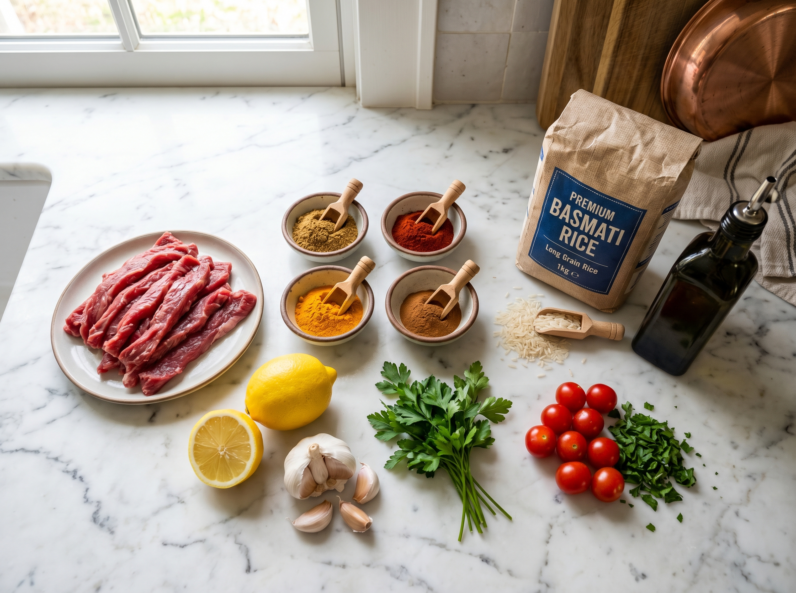
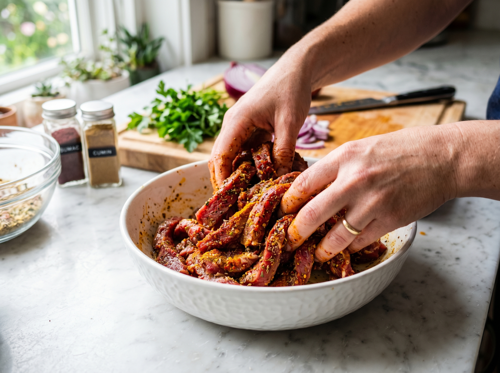
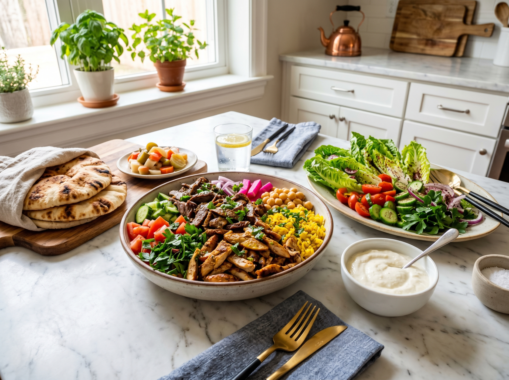

This beef shawarma bowl is proof that you don't need a rotisserie spit to get that bold, deeply spiced flavor at home. Ground beef seasoned with cumin, coriander, turmeric, and cinnamon, served over fluffy rice with a cool garlic sauce — it's a complete meal in one bowl, ready in 40 minutes.
Shawarma bowls have taken over the American food scene in the last few years, and for good reason — they hit every flavor note at once: warm spices, savory meat, cool creamy sauce, and fresh crunchy toppings. This version keeps everything in one pan (plus a pot for rice) to make it as weeknight-friendly as possible. It's also hands-down my favorite meal prep recipe — make a big batch on Sunday, and you've got lunch sorted for the week.
Why You'll Love This Recipe
- Better than takeout — bold spices, fresh toppings, no mystery ingredients
- Meal prep champion — beef and rice store beautifully for 4 days
- One pan for the meat — minimal cleanup on a weeknight
- Budget-friendly — ground beef is one of the most affordable proteins
- Customizable — everyone can build their own bowl with the toppings they like
About the Shawarma Spice Blend
The magic of shawarma is in the spice blend. Here's exactly what each spice brings to this dish — and where to find them at any US grocery store:
- Cumin — earthy, warm, the backbone of the blend. Spice aisle at any store.
- Coriander — in the US, this refers to the dried ground seed (what the British call "coriander"). It's citrusy and nutty. Note: "cilantro" is the fresh leaf; "coriander" is the dried seed — two different things at the store.
- Smoked paprika — adds a subtle smoky depth. Regular paprika works if that's what you have.
- Turmeric — the golden color of shawarma comes from this. Also adds a gentle earthiness.
- Cinnamon — this is the secret ingredient. A small amount adds warmth and complexity without tasting like a dessert. Don't skip it.
All of these are available at Walmart, Kroger, Whole Foods, Trader Joe's, and World Market. Amazon is great for buying larger quantities if you make this often (and you will).
The Garlic Sauce (Toum-Inspired)
Traditional shawarma comes with toum, a Lebanese garlic sauce made by emulsifying garlic with oil. Our quick version uses mayonnaise as the base for a similar creamy, garlicky result in 2 minutes flat. It's cooling, tangy, and completely addictive poured over the spiced beef.
One-Pan Beef Shawarma Bowl
Bold, spiced beef over fluffy rice with homemade garlic sauce and fresh toppings. Better than your favorite takeout spot — and ready in 40 minutes.
Ingredients

For the Beef
Rice & Garlic Sauce
Toppings
Instructions
-
1
Cook the rice. Prepare rice according to package directions (usually a 1:2 ratio with water, bring to boil, reduce to low, cover 18 minutes). Fluff with a fork and keep covered while you make the beef.
-
2
Make the garlic sauce. In a small bowl, whisk together mayonnaise, grated garlic, lemon juice, and water until completely smooth and drizzle-able. Season with a pinch of salt. This takes 2 minutes — do it first so the flavors develop while you cook. Refrigerate until serving.
-
3
Soften the aromatics. Heat olive oil in a large skillet over medium-high heat. Add diced onion and cook, stirring occasionally, for 3–4 minutes until softened and translucent. Add minced garlic and stir for 30 seconds until fragrant.
-
4

Brown the beef. Add ground beef and break it apart with a wooden spoon or spatula into small crumbles. Cook over medium-high heat for 5–6 minutes until browned with no pink remaining. If there's a lot of excess fat in the pan, drain most of it off — leave about 1 tablespoon for flavor.
-
5
Add the spices. Sprinkle all the spices (cumin, coriander, paprika, turmeric, cinnamon, salt) over the beef. Stir well to coat every bit of meat with the seasoning. Cook for 1–2 more minutes — this "blooms" the spices and intensifies their flavor. Squeeze in the lemon juice and stir.
-
6
Assemble and serve. Divide rice between 4 bowls. Top each with a generous scoop of spiced beef. Add cucumber, cherry tomatoes, and lettuce. Drizzle generously with garlic sauce. Finish with fresh parsley and any extra toppings. Eat immediately.
Pro Tips for the Best Shawarma Bowl
- Toast the spices. After draining fat, let the spices cook in the pan for 2 full minutes — this step makes a huge difference in depth of flavor.
- Use 80/20 beef. The fat content keeps the beef juicy and flavorful. Leaner beef can be dry once spiced and cooked.
- Make extra garlic sauce. It keeps in the fridge for 5 days and is amazing on everything — sandwiches, roasted vegetables, eggs.
- Pickle your onions. Thinly sliced red onion + white vinegar + a pinch of salt + 15 minutes = the best quick-pickled onions that take this bowl to another level.
- Meal prep tip. Store beef and rice separately from fresh toppings. Reheat beef and rice together in a pan with a splash of water.
Variations
- Lamb version: Substitute ground lamb for beef — lamb has a natural affinity for these spices and is absolutely delicious.
- Cauliflower rice: Replace the white rice with cauliflower rice for a low-carb bowl without losing any of the flavor.
- Wrap it: Spoon the beef into warm pita bread (find it at Trader Joe's, Whole Foods, or any Middle Eastern grocery) with the toppings for a shawarma wrap.
- Spicy version: Add ½ teaspoon cayenne pepper or Aleppo pepper to the spice blend for gentle heat.
Serving Suggestions

- This bowl is a complete meal as written — protein, carbs, and vegetables all in one
- Add a side of warm pita bread for scooping
- A simple salad of diced tomato and parsley on the side is traditional
- Hummus (store-bought is great — Trader Joe's and Whole Foods both have excellent options) adds richness
Storage & Reheating
Refrigerator
Beef and rice keep up to 4 days in separate airtight containers. Toppings should be stored separately and added fresh.
Freezer
Freeze the spiced beef (without rice) for up to 3 months. Thaw overnight in the fridge and reheat in a pan.
Reheat
Reheat beef and rice in a skillet with 2 tablespoons of water over medium heat, or microwave covered for 2 minutes. Always add fresh toppings after reheating.
Frequently Asked Questions
What is shawarma exactly?
Shawarma is a Middle Eastern dish traditionally made from meat (beef, lamb, or chicken) stacked on a vertical rotating spit and slow-roasted. The meat is shaved off and served in wraps or bowls with garlic sauce and fresh toppings. This recipe captures those same warm spice flavors in a quick skillet version — same great taste, no rotisserie required.
Where can I find all these spices in the US?
All the spices (cumin, coriander, paprika, turmeric, cinnamon) are in the spice aisle of every US grocery store — Walmart, Kroger, Publix, Whole Foods, or Trader Joe's. If you want a convenience option, simply search for "shawarma spice blend" on Amazon — several ready-made blends are available and work perfectly in this recipe.
Can I use ground turkey instead of beef?
Yes! Ground turkey works well. Use 93% lean turkey and add an extra tablespoon of olive oil since it has less fat than beef. The spice flavors come through just as well.
Is this recipe good for meal prep?
This is one of the best meal prep recipes on the site. Make a double batch of beef on Sunday, store in the fridge, and you have 4 days of easy lunches and dinners. Just prep fresh toppings each day to keep everything crisp.
What's the difference between coriander and cilantro?
Great question — this trips up a lot of American cooks. Both come from the same plant (Coriandrum sativum), but in the US: "cilantro" refers to the fresh green herb (the leaves), and "coriander" refers to the dried ground seeds. This recipe calls for ground coriander (the dried seed) — you'll find it labeled "coriander" in the spice aisle, not the produce section.
Nutrition Information
Per serving (1 bowl with rice and garlic sauce, without optional toppings). Values are estimates.
| Nutrient | Amount per Serving |
|---|---|
| Calories | 520 kcal |
| Total Fat | 18g |
| Protein | 36g |
| Carbohydrates | 48g |
| Fiber | 2g |
| Sodium | 680mg |
You Might Also Love


Made This Bowl?
Tell me in the comments how you customized it — I love hearing what toppings people add! And if you're on Pinterest, pin this recipe so you can find it again for your next meal prep Sunday.
📌 Save This Recipe on Pinterest